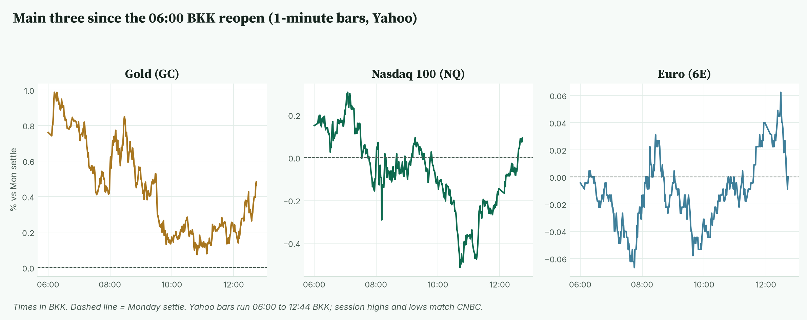
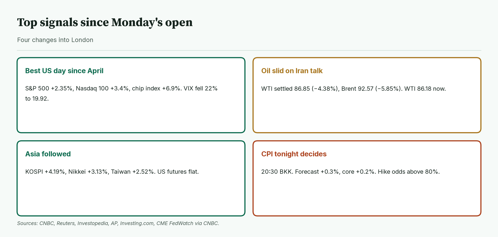
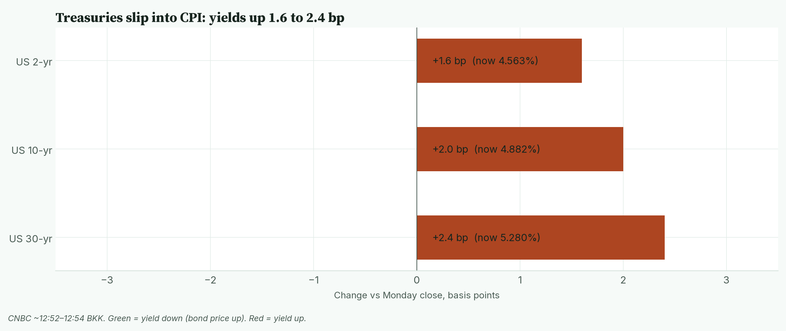
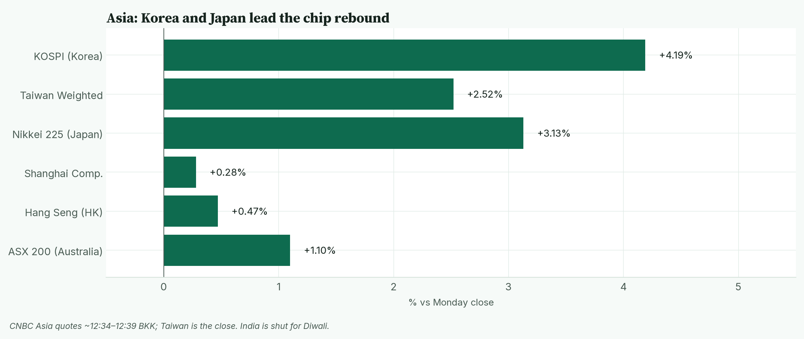
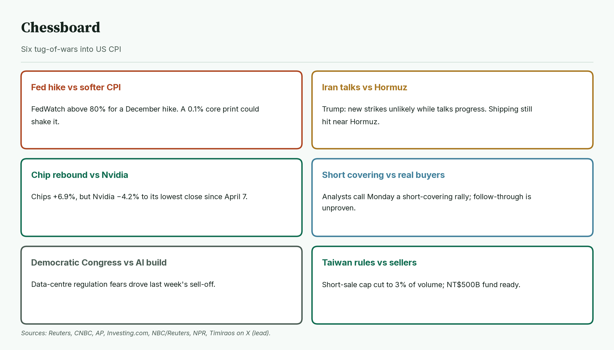
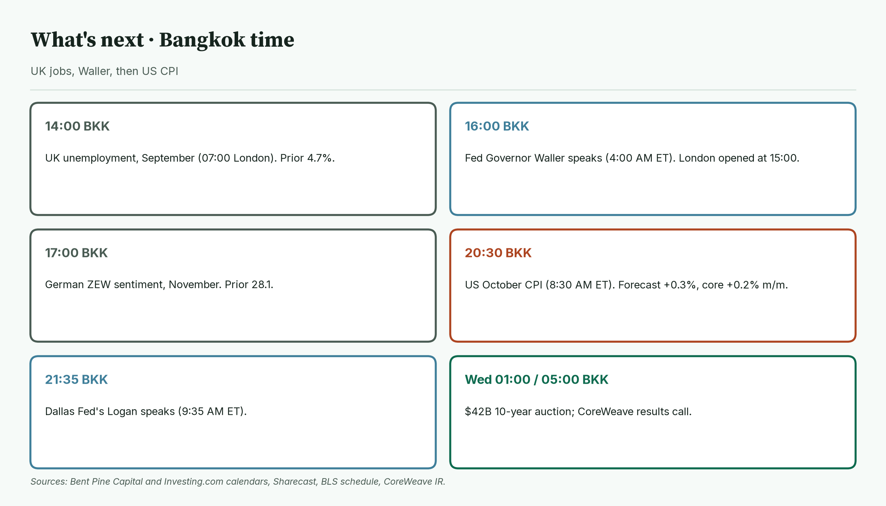
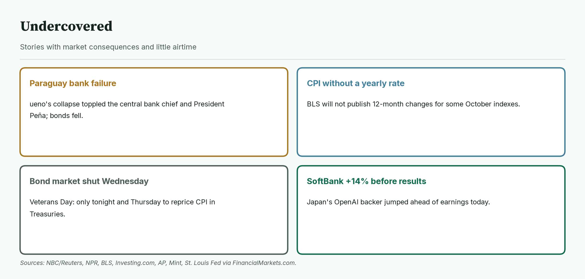
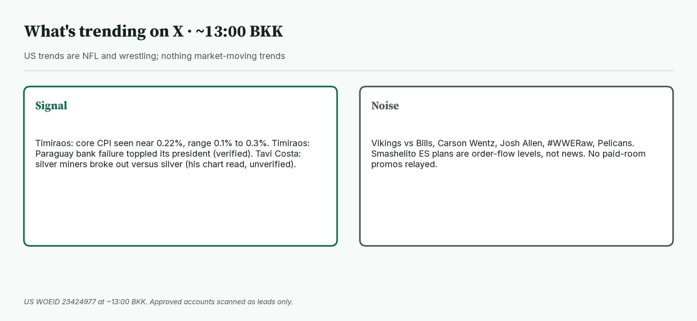

April · Market Intel, pre-London · Tue Nov 10, 2026 · ~13:15 BKK / ~06:15 London
Headline: Wall Street had its best day since April, oil slid on Iran-talk hopes, and Asia followed with KOSPI +4.19% and the Nikkei +3.13%. US futures are flat. Gold futures sit at 4,133.7 (+0.47%), Nasdaq futures at 28,036.00 (+0.08%), and euro futures at 1.12390 (unchanged). US October CPI at 20:30 BKK decides the session.
So what: the rebound now has to survive a hard data test. A forecast-matching CPI keeps a December Fed hike likely. Only a soft core print would change the story.
 Caption: Futures at 12:43–12:44 BKK versus Monday's settle. Everything is quiet after Monday's big move. The VIX closed Monday down 22%.
Caption: Futures at 12:43–12:44 BKK versus Monday's settle. Everything is quiet after Monday's big move. The VIX closed Monday down 22%.
1) Main instruments The three main contracts since the 06:00 BKK reopen, as a % move from Monday's settle. Gold and Nasdaq dipped into late morning and recovered. The euro is drifting around flat. |
 Caption: The three main contracts since the 06:00 BKK reopen, as a % move from Monday's settle. Gold and Nasdaq dipped into late morning and recovered. The euro is drifting around flat.
(Futures are contracts that trade nearly around the clock, so they show the mood before stock markets open. Quotes are from the Yahoo Finance futures feed at 12:43–12:44 BKK (05:43–05:44 UTC), about 10 minutes delayed, and match CNBC within a tick. The CME reopen was 06:00 BKK (18:00 New York Monday). Session highs and lows use 1-minute bars from 06:00 BKK and match CNBC.)
Caption: The three main contracts since the 06:00 BKK reopen, as a % move from Monday's settle. Gold and Nasdaq dipped into late morning and recovered. The euro is drifting around flat.
(Futures are contracts that trade nearly around the clock, so they show the mood before stock markets open. Quotes are from the Yahoo Finance futures feed at 12:43–12:44 BKK (05:43–05:44 UTC), about 10 minutes delayed, and match CNBC within a tick. The CME reopen was 06:00 BKK (18:00 New York Monday). Session highs and lows use 1-minute bars from 06:00 BKK and match CNBC.)
- Gold futures (GC, Dec): 4,133.7, +0.47%, at 12:43 BKK. Driver: gold is holding Monday's gains as oil falls and inflation fears cool (Reuters, Investopedia). Monday's settle was 4,114.5. Today's range is 4,117.2 (10:49 BKK) to 4,156.2 (06:13 BKK).
- Nasdaq 100 futures (NQ, Dec): 28,036.00, +0.08%, at 12:44 BKK. Driver: the cash Nasdaq 100 jumped 3.4% Monday on a chip rebound; futures are pausing before CPI (Investing.com). Monday's settle was 28,014.50. Today's range is 27,869.00 (10:44 BKK) to 28,109.00 (07:04 BKK).
- Euro futures (6E, Dec): 1.12390, +0.00% (unchanged), at 12:43 BKK. Driver: the euro rose 0.72% Monday as the dollar eased (Reuters). Monday's settle was 1.12390. Today's range is 1.12315 (07:45 BKK) to 1.12460 (12:29 BKK). Spot euro is 1.1222 (CNBC, ~12:54 BKK).
- Takeaway: all three are coiled in tight ranges. CPI at 20:30 BKK is the release valve.
Context. The dollar index (DXY, the dollar against six major currencies) is 101.68, +0.03% (CNBC, ~12:54 BKK). The 10-year US yield (what the US government pays to borrow for 10 years) is 4.882%, up 2.0 basis points (CNBC, ~12:52 BKK; a basis point is 0.01 percentage point). The VIX (the "fear gauge" built from S&P 500 option prices) closed Monday at 19.92, −22.31% versus Friday's 25.64 (Cboe via CNBC). US oil (CL, December) is 86.18, −0.77% (12:44 BKK). S&P 500 futures (ES) are 7,589.75, +0.20% (12:44 BKK). Bitcoin is $74,805, +0.09% versus CNBC's previous close (CNBC/Coin Metrics, ~12:54 BKK).
2) Top signals Four changes since Monday's open. Stocks surged, oil fell, Asia followed, and CPI now decides. |
 Caption: Four changes since Monday's open. Stocks surged, oil fell, Asia followed, and CPI now decides.
Caption: Four changes since Monday's open. Stocks surged, oil fell, Asia followed, and CPI now decides.
- Best US day since April. The S&P 500 rose 2.35% to 7,549.94, its best day since April 8. The Nasdaq Composite rose 2.74% to 25,253.14. The Dow rose 2.15% to 52,389.75. (High: CNBC, Reuters)
- Chips led; Nvidia lagged. The chip index rose 6.9%. Nvidia fell 4.2% to its lowest close since April 7 after its board opened a probe tied to CEO Jensen Huang. (High: Reuters)
- Oil slid. WTI settled 86.85, −4.38%. Brent settled 92.57, −5.85%. Trump said new strikes on Iran are highly unlikely while talks progress. (High: Reuters via Euronext)
- Asia followed. KOSPI +4.19%, Nikkei +3.13%, Taiwan closed +2.52% at 42,711.92 (CNBC quotes).
- Takeaway: fear drained fast. The VIX is back under 20.
3) Rates, FX and oil Treasuries slipped overnight. Yields are up 1.6 to 2.4 bp ahead of CPI. |
 Caption: Treasuries slipped overnight. Yields are up 1.6 to 2.4 bp ahead of CPI.
Caption: Treasuries slipped overnight. Yields are up 1.6 to 2.4 bp ahead of CPI.
- Now (CNBC ~12:52–12:54 BKK): 2-year 4.563% (+1.6 bp), 10-year 4.882% (+2.0 bp), 30-year 5.280% (+2.4 bp).
- Mentor: bond prices fall when yields rise. Yields creeping up before CPI means traders are bracing for a firm number.
- Yen. USD/JPY is 158.04, +0.09% (CNBC, ~12:54 BKK).
- Oil. WTI's range today is 85.52 to 86.93. January Brent is 91.87, −0.76% (CNBC, ~12:44 BKK).
- Takeaway: cheaper oil helps the inflation outlook, but rates are not celebrating yet.
4) Why it matters Asia at CNBC's midday prints. Korea and Japan lead; Taiwan has closed. India is shut for Diwali. |
 Caption: Asia at CNBC's midday prints. Korea and Japan lead; Taiwan has closed. India is shut for Diwali.
Tonight's CPI is the last inflation report before the Fed's December 8–9 meeting.
Caption: Asia at CNBC's midday prints. Korea and Japan lead; Taiwan has closed. India is shut for Diwali.
Tonight's CPI is the last inflation report before the Fed's December 8–9 meeting.
- Forecasts are +0.3% for headline and +0.2% for core on the month (Dow Jones consensus via CNBC). September was +0.6% and +0.3%.
- Markets price better than 80% odds of a December quarter-point hike (CME FedWatch via CNBC). Kalshi traded a hike at about 77 cents over the weekend (FinancialMarkets.com).
- BofA says only a soft 0.1% monthly print would likely stop a hike (via CNBC).
- Mentor: "core" strips out food and energy, which swing a lot. The Fed watches core because it shows the stickier trend.
- Takeaway: a forecast-matching print keeps the hike priced. A soft core print would be the surprise that moves Nasdaq and gold most.
5) Chessboard Six tug-of-wars into CPI. The Fed path and Iran talks can move gold and Nasdaq fastest. |
 Caption: Six tug-of-wars into CPI. The Fed path and Iran talks can move gold and Nasdaq fastest.
Caption: Six tug-of-wars into CPI. The Fed path and Iran talks can move gold and Nasdaq fastest.
- Fed hike vs softer CPI. Hike odds above 80% (FedWatch via CNBC).
- Iran talks vs Hormuz. Trump said new strikes are unlikely while talks progress, yet both sides reported shipping hit near Hormuz (Reuters).
- Chip rebound vs Nvidia. Chips +6.9%, Nvidia −4.2% (Reuters).
- Short covering vs real buyers. Analysts called Monday short covering and bargain hunting (Reuters). Follow-through is unproven.
- Democratic Congress vs AI build-out. Fears of data-centre regulation drove last week's sell-off (CNBC).
- Taiwan's rules vs sellers. The short-sale cap was cut to 3% of 30-day volume from 30%, with a NT$500 billion fund ready (Investing.com).
- Takeaway: the scheduled risk is CPI. The unscheduled risks are Iran headlines and more Nvidia news.
6) Leading indicators (BKK times) UK jobs and Waller this afternoon, then US CPI tonight. The 10-year auction and CoreWeave land overnight. |
 Caption: UK jobs and Waller this afternoon, then US CPI tonight. The 10-year auction and CoreWeave land overnight.
Caption: UK jobs and Waller this afternoon, then US CPI tonight. The 10-year auction and CoreWeave land overnight.
- 14:00: UK unemployment, September (07:00 London). Prior 4.7%.
- 15:00: London and Frankfurt open (08:00 London).
- 16:00: Fed Governor Christopher Waller speaks (4:00 AM ET).
- 17:00: German ZEW sentiment, November (10:00 GMT). Prior 28.1.
- 18:00: US NFIB small-business optimism (6:00 AM ET).
- 20:30: US October CPI (8:30 AM ET). Forecast +0.3%, core +0.2% on the month.
- 21:35: Dallas Fed's Lorie Logan speaks (9:35 AM ET).
- Wed 01:00: $42 billion 10-year note auction (1:00 PM ET). Wed 03:30: Fed's Bowman speaks (3:30 PM ET). Wed 05:00: CoreWeave results call (5:00 PM ET). US bond markets close Wednesday for Veterans Day.
- Levels to watch: GC 4,117.2 and 4,156.2. NQ 27,869.00 and 28,109.00. 6E 1.12315 and 1.12460. 10-year 4.886% (today's CNBC high). WTI 85.52.
- Takeaway: Waller at 16:00 BKK sets the tone. CPI at 20:30 BKK decides the session.
7) Undercovered Four stories with little airtime. They touch emerging-market risk, data quality, bond liquidity and AI funding. |
 Caption: Four stories with little airtime. They touch emerging-market risk, data quality, bond liquidity and AI funding.
Caption: Four stories with little airtime. They touch emerging-market risk, data quality, bond liquidity and AI funding.
- Paraguay's bank failure. The collapse of digital lender ueno led to the central bank chief's resignation and President Santiago Peña's resignation on Nov 5. Paraguay's bonds fell (High: Reuters via NBC, NPR).
- CPI without a yearly rate. BLS will not publish 12-month changes for October indexes that lack October 2025 data, after last year's shutdown (High: BLS via FinancialMarkets.com, CNBC).
- Thin bond week. Treasuries shut Wednesday, so CPI repricing happens tonight and Thursday (High: Bent Pine calendar).
- SoftBank jumped about 14% to 15% ahead of its results today (High: AP, Mint).
8) What's trending on X (~13:00 BKK) US trends are NFL and wrestling. Nothing market-moving is trending. |
 Caption: US trends are NFL and wrestling. Nothing market-moving is trending.
Caption: US trends are NFL and wrestling. Nothing market-moving is trending.
- US: Vikings, Carson Wentz, Bills, Josh Allen, #WWERaw, Pelicans.
- Signal: Nick Timiraos says economists see core CPI near 0.22%, with estimates spanning 0.1% to 0.3% (lead; consistent with the 0.2% consensus).
- Signal: Timiraos on Paraguay flagged the ueno failure (verified against Reuters and NPR above).
- Signal / unverified: Tavi Costa says silver miners broke a decade-long resistance line against silver. That is his chart read; I have not verified it.
- Noise: NFL, wrestling. Smashelito's ES plan calls Monday a "short-covering rally" and marks 7,562 as a reference; that is order-flow analysis, not news. No JJ / vwaptrader1 paid-room promos relayed.
Bottom line: Monday's relief rally was real but unproven, and futures are waiting on CPI. For Jim: gold at 4,133.7 sits mid-range between 4,117.2 and 4,156.2. Nasdaq at 28,036.00 is just above Monday's 28,014.50 settle; 27,869.00 is the floor and 28,109.00 the ceiling. The euro at 1.12390 sits inside 1.12315 to 1.12460. Interpretive note: a hot core print could push yields up and test those floors; a soft one could break the ceilings. That is a possible path, not a forecast.
Confidence: Futures levels: high for direction, medium-high for the exact tick (Yahoo feed, about 10 minutes delayed; settles and session ranges match CNBC). Yields, DXY, spot euro, Brent, yen, Bitcoin: CNBC, time-stamped. VIX: Monday official close via CNBC. Fed odds: CME FedWatch via CNBC, not read directly from CME. Monday US closes and oil settles: CNBC, Reuters. Asia: CNBC quotes, AP, Investing.com. Calendar: Bent Pine Capital, Investing.com, Sharecast, BLS. Timiraos and Tavi Costa: X leads only. China's October trade data was left out because sources disagree on whether it has been released.
Charts: /workspace/april-charts/2026-11-10/pre-london-{scoreboard,main3,signals,rates,asia,chess,leading,under,xsplit}.png |